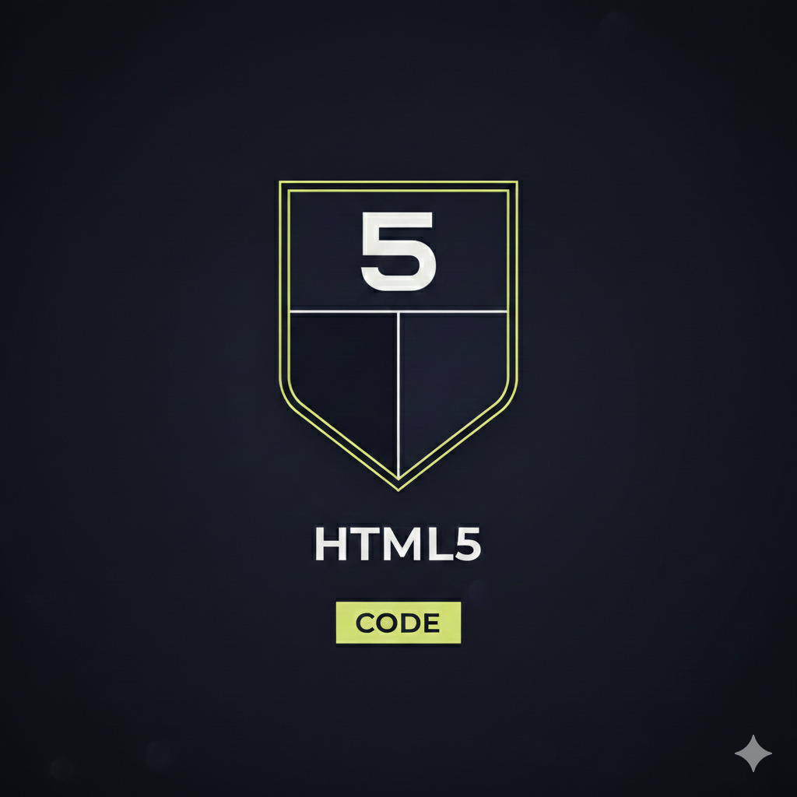
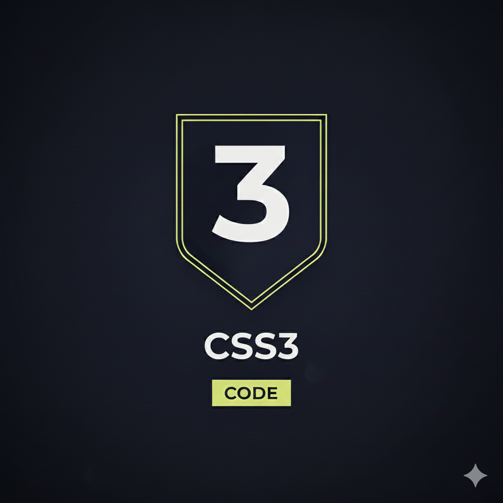
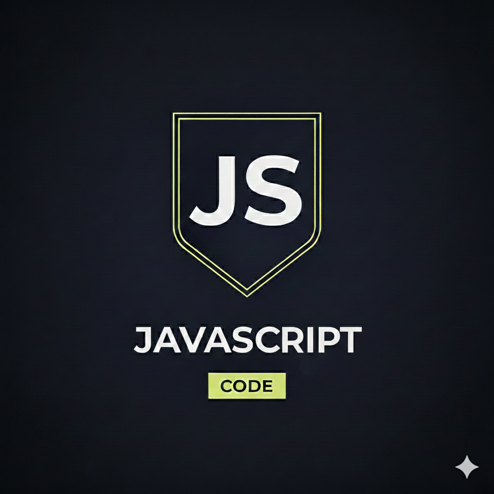
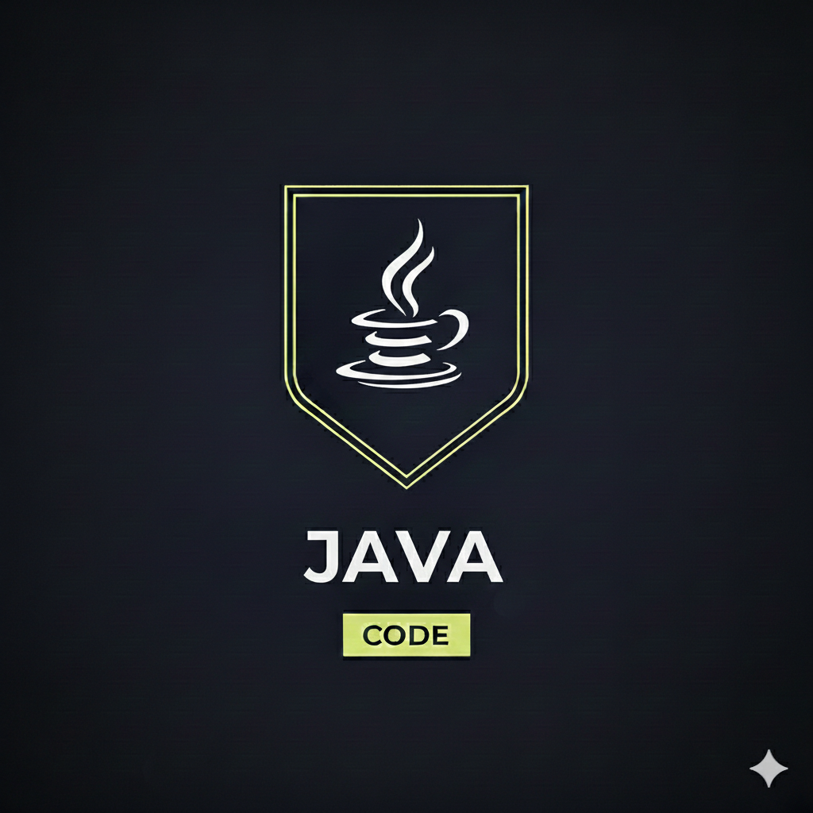
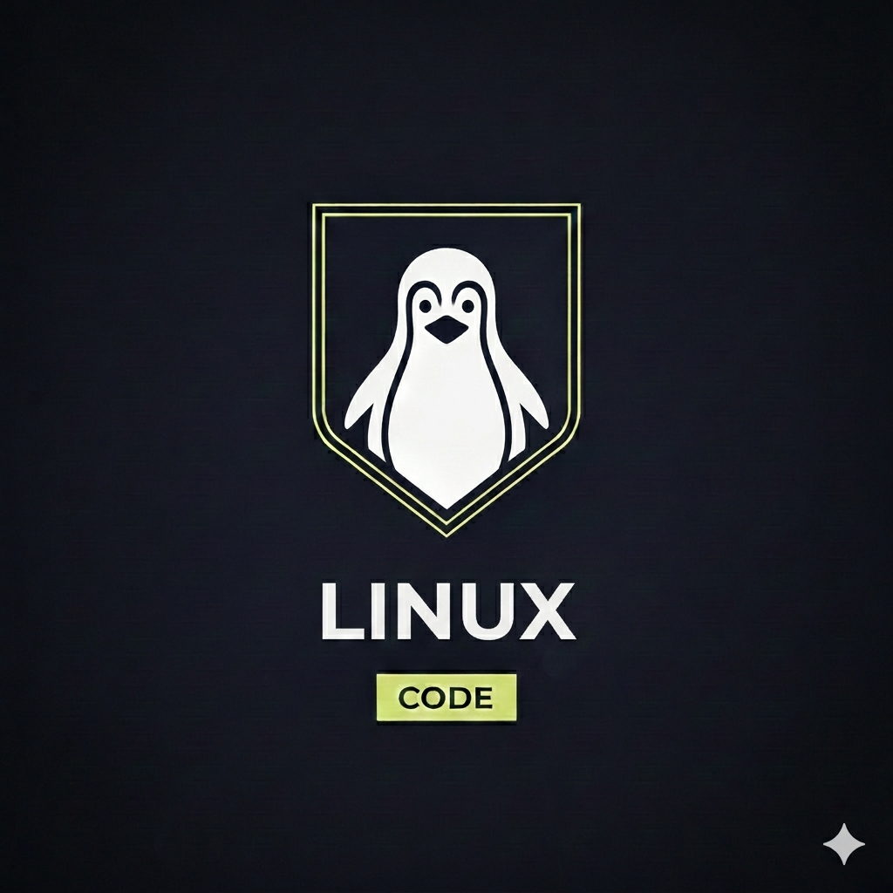
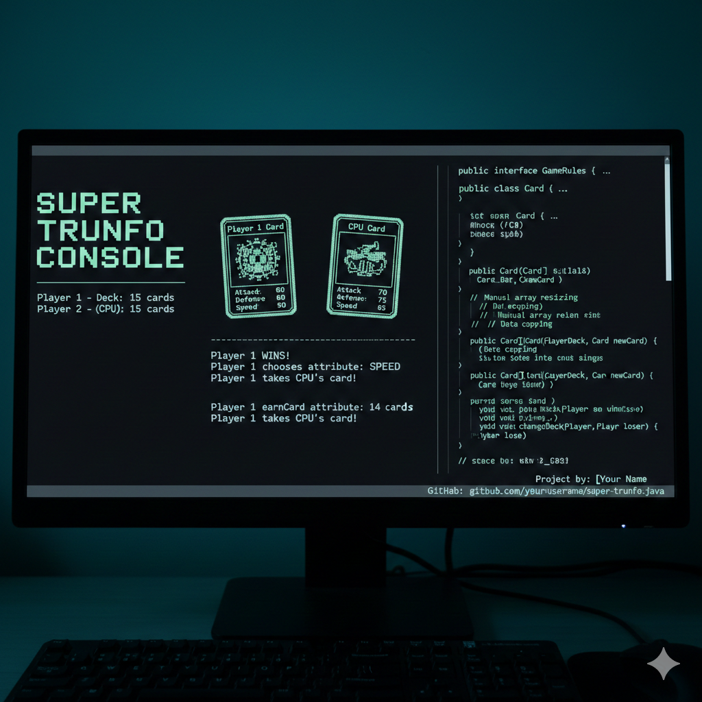
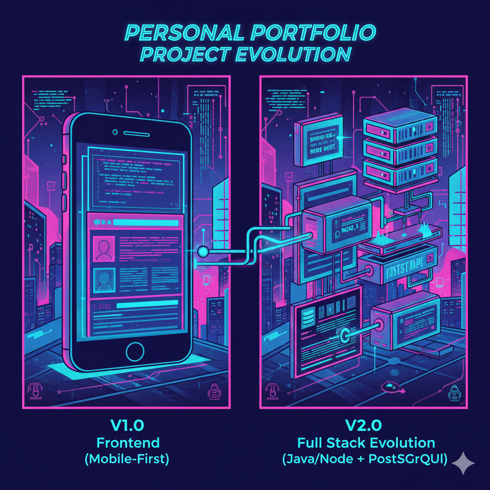

🎖️ Conhecimentos
HTML

Sou estudante de Engenharia de Software e desenvolvedor em formação, com foco na construção de aplicações web estruturadas e responsivas.
Tenho conhecimento em HTML semântico, aplicando corretamente tags como header, main, section, article, aside, nav e footer para organizar o conteúdo de forma clara, acessível e otimizada para SEO.
Estruturo layouts com mentalidade mobile-first, compreendendo que o mobile não é uma versão reduzida do desktop, mas a base da aplicação. Desenvolvo o HTML pensando na estrutura principal e utilizo CSS (Grid e Flexbox) para expandir a experiência em telas maiores.
Possuo entendimento sobre organização de componentes, separação de responsabilidades e estrutura limpa de código, buscando sempre clareza, manutenção simples e escalabilidade.
Estou em constante evolução, aprimorando minha capacidade de transformar layouts em interfaces bem estruturadas, acessíveis e alinhadas às boas práticas da web.
CSS

Possuo conhecimento em CSS moderno, aplicando boas práticas para construção de layouts organizados, responsivos e reutilizáveis.
Trabalho com abordagem mobile-first, estruturando primeiro a experiência para dispositivos móveis e expandindo para telas maiores utilizando media queries de forma estratégica.
Utilizo CSS Grid e Flexbox para criação de layouts complexos, compreendendo a diferença entre organização estrutural (Grid) e alinhamento/distribuição (Flexbox).
Tenho experiência na criação de componentes reutilizáveis, organização modular de arquivos (como separação por componentes e importação em arquivo principal) e aplicação consistente de espaçamentos, sombras, bordas e tipografia.
Também entendo a importância da hierarquia visual, responsividade e manutenção do código, buscando sempre clareza, escalabilidade e padronização no estilo da aplicação.
JavaScript

Possuo conhecimento fundamental em JavaScript, com foco na compreensão da lógica de programação e manipulação básica do DOM.
Desenvolvi aplicações simples para praticar conceitos como variáveis, condicionais, estruturas de repetição e funções, consolidando a base necessária para evolução na linguagem.
Meu foco atual está no fortalecimento da lógica e na escrita de código claro e organizado, priorizando boas práticas e entendimento da base da linguagem antes de avançar para frameworks.
Java

Possuo conhecimento em Java com foco no desenvolvimento backend e construção de APIs REST. Trabalho aplicando os princípios da programação orientada a objetos (POO), utilizando encapsulamento, herança, polimorfismo e abstração na modelagem de entidades e regras de negócio.
Tenho experiência na criação de APIs utilizando o ecossistema Spring, estruturando aplicações em camadas bem definidas (Controller, Service e Repository), compreendendo a importância da separação de responsabilidades e organização do código para facilitar manutenção e escalabilidade.
Git

Utilizo o Git como ferramenta central de versionamento, organizando meus projetos de forma estruturada e segura.
Tenho conhecimento em controle de versões distribuído, aplicando corretamente, conceitos como commit, branch, merge, pull e push para manter histórico claro, rastreável e confiável.
Estruturo meu fluxo com mentalidade controle incremental, compreendendo que cada commit deve representar uma unidade lógica de alteração. Escrevo mensagens descritivas e utilizo branches para desenvolvimento isolado, garantindo organização e estabilidade do código principal.
Possuo entendimento sobre versionamento colaborativo, resolução de conflitos e boas práticas de integração, buscando sempre clareza no histórico, rastreabilidade e manutenção eficiente do projeto.
Busco continuamente formas mais eficientes e organizadas de trabalhar com versionamento, aprimorando meu fluxo e minhas práticas no dia a dia dos projetos.
Linux

Sou entusiasta em sistema Linux, com foco na compreensão e administração de ambientes baseados em software livre.
Tenho conhecimento em fundamentos do Linux, utilizando terminal para navegação no sistema de arquivos, gerenciamento de permissões, manipulação de processos e administração básica de usuários e serviços.
Estruturo ambientes com mentalidade orientada a servidores, compreendendo que estabilidade, segurança e desempenho são pilares essenciais. Configuro serviços, realizo ajustes no sistema e aplico boas práticas para manter organização e previsibilidade.
Possuo entendimento sobre estrutura de diretórios, gerenciamento de pacotes, controle de acesso e princípios de redes, buscando sempre clareza operacional, padronização e facilidade de manutenção.
Tenho paixão pelo sistema, então aprofundo meus estudos em administração de sistemas, automação e segurança para atuar com maior autonomia e eficiência em ambiente Linux.
📚 Projetos
Super Trunfo versão digital

Projeto desenvolvido em Java com foco em aprofundar conhecimentos em Programação Orientada a Objetos, interfaces, manipulação de arrays e controle de fluxo. A proposta foi recriar o clássico jogo Super Trunfo em ambiente de console, aplicando regras reais de jogo e modelagem orientada a objetos.
Decisão técnica intencional, mesmo podendo utilizar List, optei por trabalhar com arrays de tamanho fixo para exercitar:
- 1- Redimensionamento manual de estruturas;
- 2- Cópia de dados entre vetores;
- 3- Controle explícito de memória lógica;
- 4- Manipulação de índices.
Essa decisão tornou o projeto significativamente mais desafiador e aumentou a profundidade da solução.
Principal desafio resolvido, arrays possuem tamanho fixo. No jogo, O vencedor precisa ganhar uma carta e O derrotado precisa perder uma carta, para isso implementei uma estratégia baseada em:
- 1- Criação de um novo array com tamanho ajustado;
- 2- Cópia manual dos elementos;
- 3- Inserção ou remoção da carta na posição correta;
- 4- Rotação do baralho com méTODO específico (changeDeck);
Isso foi feito através dos seguintes méTODOs:
- 1- earnCard;
- 2- loseCard;
- 3- changeDeck.
Essa abordagem simula um comportamento dinâmico utilizando uma estrutura estática.
Este projeto demonstra a aplicação sólida de Programação Orientada a Objetos, utilizando interface como contrato para definição das regras do jogo e garantindo separação clara de responsabilidades. A manipulação manual de arrays foi utilizada como exercício intencional de controle estrutural, envolvendo redimensionamento, cópia de dados e gerenciamento de índices.
O desenvolvimento também envolveu estruturas de repetição para construção e distribuição do baralho, uso de randomização para embaralhamento e escolha de atributos pela máquina, além de organização em camadas, separando dados da regra de negócio. O controle de estado do jogo foi implementado de forma explícita, assegurando coerência entre rodadas e definição de vencedor, com modelagem de domínio simples e objetiva.
Como diferencial, o projeto não depende de estruturas prontas como ArrayList, priorizando controle manual da lógica de funcionamento. A implementação inclui rotação de baralho, controle explícito do fluxo do jogo e organização do código por pacotes (entities e database), reforçando clareza estrutural e separação de responsabilidades.
De forma geral, o projeto evidencia capacidade de resolver problemas estruturais, domínio dos fundamentos da linguagem Java, organização orientada a objetos e pensamento lógico aplicado na construção de uma solução completa. Também demonstra persistência na resolução de desafios técnicos, especialmente no gerenciamento dinâmico de estruturas originalmente estáticas.
Garage Database

O Garage Database é uma aplicação desenvolvida com Spring Boot que implementa um sistema completo de CRUD para gerenciamento de carros, caminhões e motocicletas, utilizando JPA/Hibernate para persistência de dados e modelagem com herança (TABLE_PER_CLASS).
O diferencial do projeto está na integração com a API do Google Gemini. Durante o cadastro do veículo, a aplicação consome a API de IA generativa, que cria automaticamente uma descrição comercial persuasiva de 35 palavras, pronta para publicação.
Problema resolvido, em plataformas de venda de veículos, a criação manual de descrições é repetitiva, inconsistente e dependente da habilidade do anunciante. O sistema resolve esse problema automatizando o processo.
O usuário informa apenas os dados técnicos do veículo, e a aplicação gera um anúncio padronizado e otimizado para venda. Isso reduz esforço manual, aumenta produtividade e padroniza qualidade de anúncios.
Arquitetura e Conceitos Aplicados:
- 1- Programação Orientada a Objetos;
- 2- Modelagem de domínio com entidades JPA;
- 3- Relacionamentos @ManyToOne e @OneToMany;
- 4- Consumo de API REST utilizando HttpClient;
- 5- Desserialização de JSON com Gson;
- 6- Tratamento de exceções customizadas;
- 7- Validações de regra de negócio (ano, preço, tipo de motor);
- 8- Arquitetura em camadas (Model, Repository, Service e App);
- 9- Uso de variáveis de ambiente para proteção da API Key.
Visão estratégica, o projeto foi idealizado como um módulo de automação para plataformas de venda de veículos. Fluxo pensado como produto:
- 1- Usuário cadastra o veículo;
- 2- O sistema consome IA generativa;
- 3- O anúncio é criado automaticamente;
- 4- Pronto para publicação.
A solução demonstra aplicação prática de IA integrada a um sistema transacional tradicional, conectando backend estruturado com inteligência artificial para geração de valor real ao usuário.
Portfólio Pessoal

O Portfólio Pessoal é uma aplicação web desenvolvida com HTML semântico e CSS puro, estruturada com abordagem mobile-first e organização modular de estilos. A versão 1.0 foi construída com foco em:
- 1- Estrutura semântica clara (header, main, section, footer, nav, figure);
- 2- Separação de responsabilidades no CSS (reset, variáveis, layout e componentes);
- 3- Uso de CSS Grid para estrutura global;
- 4- Uso de Flexbox para alinhamentos internos;
- 5- Aplicação de variáveis CSS :root para padronização de cores, tipografia e escalabilidade visual;
- 6- Organização visual baseada em hierarquia e contraste (seções claras e escuras).
A versão atual pode ser verificada no rodapé da página. :)
Decisões técnicas, arquitetura Mobile-First o layout foi pensado inicialmente para dispositivos móveis, utilizando uma única coluna como base estrutural. Elementos com classe .desktop são ocultados nessa versão, preparando o projeto para expansão responsiva futura.
CSS modularizado, o CSS foi dividido estrategicamente em reset.css, variaveis.css, layout.css e componentes.css. TODOs importados via main.css, demonstrando organização e escalabilidade do projeto.
Sistema de design baseado em variáveis, a utilização de :root centraliza tokens de design como, paleta de cores, pesos tipográficos, breakpoints (mobile, tablet, desktop). Isso permite manutenção simples e evolução consistente do layout.
Estrutura preparada para evolução backend, mesmo sendo estático na v1.0, o projeto já possui, seção dedicada para artigos, estrutura pensada para cards dinâmicos, separação lógica e clara entre seções.
Próximas versões, a evolução prevista inclui integração com PostgreSQL, backend em Java (Spring) ou Node.js, sistema de artigos dinâmicos, listagem em formato de cards com preview, carregamento individual do artigo selecionado e implementação de autenticação para área administrativa.
A ideia é transformar o portfólio em uma aplicação full stack, onde o conteúdo será persistido em banco de dados e servido dinamicamente.
Script de Automação

O projeto de Automação em Linux foi desenvolvido com foco em administração de sistemas, controle de permissões e mitigação de riscos operacionais. A proposta foi automatizar tarefas críticas utilizando scripts Bash, garantindo execução controlada e segura no ambiente.
A versão 1.0 foi construída com foco em:
- 1- Criação de scripts Bash para automação de tarefas administrativas;
- 2- Configuração de execução sem senha utilizando sudoers;
- 3- Aplicação correta de permissões com chmod e chown;
- 4- Princípio do menor privilégio na delegação de acesso;
- 5- Validação de segurança e análise de vulnerabilidades no ambiente;
- 6- Testes controlados em ambiente Linux para evitar impacto em produção.
O foco principal foi entender profundamente como o sistema de permissões do Linux funciona (usuário, grupo e outros), evitando risco como escalonamento indevido de privilégios.
Execução controlada sem senha, foi configurada a execução de scripts específicos via sudo sem necessidade de senha, limitando estritamente quais comandos poderiam ser executados. Isso evita a exposição total de privilégios administrativos.
Gestão de permissões e segurança, foram aplicados conceitos como permissões 700, 750 e 755 de forma estratégica, além da definição adequada de proprietário e grupo. O objetivo foi impedir acesso indevido ou modificação não autorizada dos scripts.
Verificação de vulnerabilidades, foi utilizada a ferramenta Lynis para auditoria de segurança no sistema Linux, identificando possíveis falhas de configuração, permissões excessivas e pontos de melhoria relacionados a hardening do ambiente.
Aprendizados técnicos, o projeto consolidou conhecimentos sobre:
- Modelo de permissões do Linux (rwx);
- Configuração segura do arquivo /etc/sudoers;
- Hardening básico de sistemas;
- Boas práticas de automação segura;
- Riscos de escalonamento de privilégios.
A proposta foi ir além da simples automação, focando na execução segura e previsível, algo essencial para ambientes corporativos e infraestrutura em Cloud.
Próximas versões, a evolução prevista inclui implementação de logs estruturados, integração com monitoramento, execução via cron com controle de integridade e aplicação de práticas adicionais de hardening no sistema.
O objetivo é evoluir o projeto para um modelo mais próximo de ambientes reais de produção, consolidando a administração de sistemas e infraestrutura.